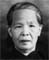
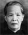

光
 
和光 名金安 = 李淑芳
Võ Göng (Gïm Ön) = Lī Sùk Föng
Héguāng (Jīn’ān ) = Lǐ Shūfāng
Kim On = Shook Fong
前
鎮前 名晃斌 = 譚蘭薇
Jïn Tẽin (Fōng Bïn) = Hâm Lãn Mĩ
Zhènqián (Huǎngbīn) = Tán Lánwēi
Bin Fong = Lun Mee
遠
俊榮 = ○莎莉
Dün Vẽin = ○ Sâ Lì
Jùnróng = ○ Shālì
John Wing = Sarah Caroline Wheeler
Removed per request
9/11/2017
綺雲 =
Yī Vũn =
Qǐyún =
Helen Wun = Larry Michael Muzzelo
遵
慧秀
Fì Xiü
Huìxiù
Katherine Hom = Samuel Alexander Morin
婉婷
Vōn Hẽin
Wǎntíng
Diana Wheeler = Kevin Katcher
Removed per request
9/11/2017

○慧婷
Fì Hẽin
Huìtíng
Christine Wai Muzzelo = Devon Clair Zimmerman
○慧真
Fì Jïn
Huìzhēn
Rachel Waijun Muzzelo
○炳欽
Bēin Hïm
Bǐngqīn
Benjamin Benhin Muzzelo